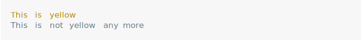

Container elements may contain other elements. Currently the following
commands create container elements: cli_div(), cli_par(), the list
elements: cli_ul(), cli_ol(), cli_dl(), and list items are
containers as well: cli_li().
Details
Themes
A container can add a new theme, which is removed when the container exits.
d <- cli_div(theme = list(h1 = list(color = "blue", "font-weight" = "bold"))) cli_h1("Custom title") cli_end(d)

Auto-closing
Container elements are closed with cli_end(). For convenience,
by default they are closed automatically when the function that created
them terminated (either regularly or with an error). The default
behavior can be changed with the .auto_close argument.
div <- function() { cli_div(class = "tmp", theme = list(.tmp = list(color = "yellow"))) cli_text("This is yellow") } div() cli_text("This is not yellow any more")

Debugging
You can use the internal cli:::cli_debug_doc() function to see the
currently open containers.
fun <- function() { cli_div(id = "mydiv") cli_par(class = "myclass") cli:::cli_debug_doc() } fun()